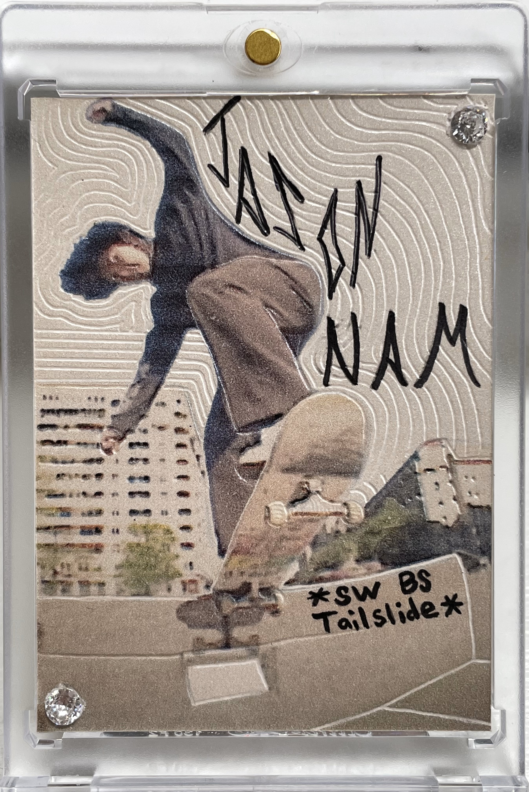

I built myself this website so I wouldn't need to use Twitter, Tumblr, or Threads in order to worry about my thoughts never being heard. Plus, I don't really care if my Tweets are "bangin" or not. Sites like those aren't meant for my particular prowess.
Let it be known: the words printed here are written by stream-of-consciousness; a reflection of the synaptic mindpower traveling from my brain and into my keyboard.
Among other things I want to bring into this space, this is a place for me to write (for now). Many of the themes here will come across as judgemental, disgustingly vile, distasteful, and downright hurtful. When I write, I'm tackling demons that plague mine and (dare I say, what seems like) our minds; staring at insecurties, projections, and toxicities right in their stupid faces and enabling them, so as to destroy them for good.
My writing philosophy is that I don't write with the intention that anything here will be read. If I did, it would be incredibly disingenuous of me. If you leave judgement at the door, some things written might be found as "funny", but that is not my intention. I'm not a salty dog, or a hater. I am no better (or worse) than you. I just need to be clear: this is entirely for my personal entertainment.
I implore anyone, at anytime, no matter what the occasion, to message me. Short or long, I don't mind. I have profound amounts of love in my heart for any person that has come/gone or is currently in my life. I am accessible, yet clearly afraid.
Dave Sharma, No Comply Nosegrab 180 Photo: Jack Kindel
 Jason Nam, Sw. Backside Tailside. Homemade Rookie Card by Jackson Kindel Photo: Aleks Nickless